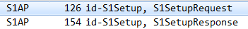

if exists(): click() type("cmd") type(Key.ENTER) sleep (2) type("cd c:\\remote") type(Key.ENTER) type("plink.exe -ssh -pw "+'""'+" root@10.102.81.77"+' "/usr/sbin/tcpdump -s 0 -U -n -w - -i eth0 not port 22 "'+ " | " +'"C:\Program Files\Wireshark\Wireshark.exe"'+" -k -i -") type(Key.ENTER) else: raise AssertionError,"Cann't capture packet from femtocell" type(, "s1ap") click() if exists(,300): click() else: raise AssertionError, "Cann't stop capture packet" # print "Cann't stop capture packet" click() click() sleep (3) type("result") sleep (1) type("s",KEY_ALT) if exists(): click() else: raise "Cann't save capture packet" click() click() click() type("result.txt") type("s",KEY_ALT) if exists(): type("y",KEY_ALT) else: raise AssertionError, "Cann't saveexport capture packet" # print "Cann't saveexport capture packet" type("q",KEY_CTRL)